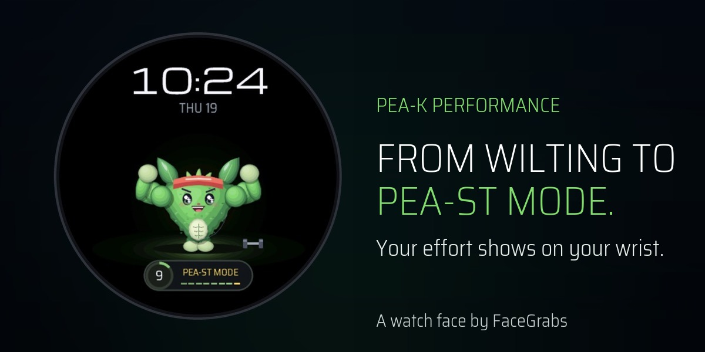

FaceGrabs / Banter
Pea-st Mode banter
Get a little green critter to Pea-st Mode, then come brag about it.

The board
Tell us what stage you are at, what weird thing your critter did, and which excuse he forgave this week. Some of his moves are secret on purpose, so no spoilers please unless you hide them behind a warning.
Pick a nickname (we suggest a cozy one), say your piece, and you are in. Angry posts are welcome too. Be kind to each other and we will all get along.
Meet the critter
Pea-k Performance is a free Garmin watch face where a little green critter grows as you train. He starts in a pea pod, then goes through Wilting, Perky, Plump, Fit, Toned, Strong and Jacked, all the way to Pea-st Mode.
It is just submitted and still in review, so there is no store link yet. The board is open for the first curious ones.
House rules
- Be kind. Happy gym-bro energy only: no loud grunts, no slamming weights, no gallon jugs of water.
- Honest feedback is welcome, including the grumpy kind.
- Hide spoilers about secret moves behind a warning, so others get to discover them.
- No spam or selling. Posts that are will be removed.